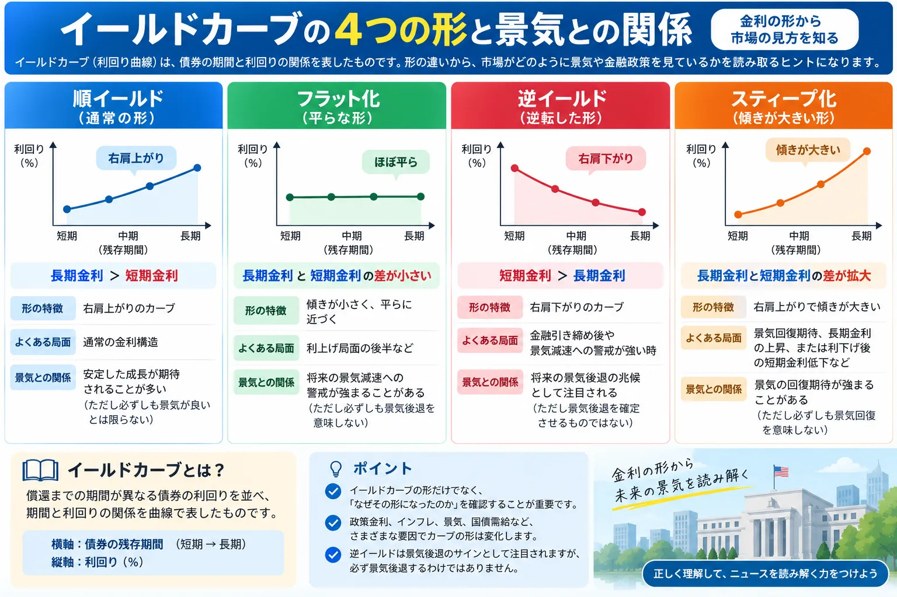

話題・トレンド
イールドカーブとは？長期金利と短期金利の差から何が分かるの？初心者向けに解説
金融ニュースでは「逆イールド」「長短金利差の縮小」「イールドカーブがスティープ化した」といった表現が登場します。イールドカーブは、期間の異なる国債などの利回りを並べることで、金融政策やインフレ、景気に対する市場の見方を読み取る材料の一つです。
Overview
イールドカーブの4つの形を最初に整理

イールドカーブを見るときは、単に「右肩上がりか右肩下がりか」を見るだけではなく、短期金利と長期金利のどちらが動いた結果なのかを確認することが大切です。同じ形の変化でも背景が異なる場合があります。
Definition
イールドカーブとは？
イールドカーブ（Yield Curve／利回り曲線）とは、償還までの期間が異なる債券の利回りを並べ、期間と利回りの関係を曲線で表したものです。
横軸
債券の残存期間
3カ月、2年、5年、10年、30年など、満期までどれくらいの期間が残っているかを並べます。
縦軸
債券の利回り
各期間の債券が市場でどの程度の利回りになっているかを表します。
例えば米国債なら、2年国債、5年国債、10年国債、30年国債などの利回りを並べることで、短期から長期までの金利構造を確認できます。
Long vs Short
長期金利と短期金利は何が違う？
短期金利
政策金利の影響を受けやすい
短期金利は、中央銀行が設定する政策金利や、近い将来に政策金利がどのように変化すると市場が予想しているかの影響を受けやすい特徴があります。
長期金利
より長い将来への予想を反映
長期金利は将来の政策金利だけでなく、インフレ期待、景気見通し、国債の需給、期間の長い債券を保有することへの上乗せ利回りなど、複数の要因から影響を受けます。
- 将来の政策金利
- インフレ期待
- 景気見通し
- 国債需給
- タームプレミアム
政策金利が上昇したからといって、10年国債や30年国債の利回りが必ず同じ幅だけ上昇するわけではありません。市場が将来の景気減速や利下げを予想すれば、長期金利の動きが短期金利と異なる場合があります。
Term Premium
なぜ通常は長期金利のほうが高くなりやすいの？
長い期間お金を貸す場合、その間に物価や市場金利、経済環境が変化する可能性があります。そのため、投資家が長期間の債券を保有する際に、こうした不確実性に対する上乗せの利回りを求める場合があります。
将来のインフレ
将来物価が上昇すると、債券から受け取るお金の実質的な価値が低下する可能性があります。
金利変動
将来市場金利が上昇すると、すでに発行された低利回りの債券価格が下落する場合があります。
将来の不確実性
期間が長くなるほど、経済や金融政策などを正確に予測することは難しくなります。
ただし「期間が長ければ必ず利回りが高い」という意味ではありません。将来の政策金利予想、インフレ、景気、債券需給などによって、長期金利が短期金利を下回ることもあります。
Curve Shapes
イールドカーブにはどんな形がある？
| 形 | 長期金利と短期金利 | カーブ | 市場で注目されるポイント |
|---|---|---|---|
| 順イールド | 短期金利 ＜ 長期金利 | 右肩上がり | 通常の金利構造として見られることが多い |
| フラット化 | 長短金利差が縮小 | 平らに近づく | 金融引き締めや将来の景気見通しなどが注目される |
| 逆イールド | 短期金利 ＞ 長期金利 | 一部で右肩下がり | 将来の景気減速や利下げ予想との関係で注目される |
| スティープ化 | 長短金利差が拡大 | 傾きが大きくなる | 長期金利上昇か短期金利低下かで意味が異なる |
順イールド
短期から長期へ向かうほど利回りが高くなる右肩上がりの形です。
フラット
短期と長期の利回り差が小さく、カーブが平らに近い状態です。
逆イールド
短期金利が長期金利を上回り、通常とは逆方向の傾きが生じます。
スティープ化
短期と長期の利回り差が拡大し、カーブの傾きが大きくなります。
Normal Yield Curve
順イールドとは？
順イールドは、短い期間の債券より長い期間の債券の利回りが高く、イールドカーブが右肩上がりになっている状態です。
長期間資金を固定することへの不確実性やタームプレミアムなどが長期金利へ上乗せされる場合があるため、一般的には順イールドが通常の形として見られます。
ただし、順イールド＝景気が必ず良いという意味ではありません。長期金利がインフレ懸念や国債需給の変化によって上昇し、結果としてカーブが急になっている場合もあります。
Flattening
イールドカーブのフラット化とは？
フラット化とは、長期金利と短期金利の差が縮小し、イールドカーブの傾きが小さくなることです。
ただし、フラット化は短期金利の上昇だけで起こるわけではありません。将来の景気減速やインフレ鈍化への予想から長期金利が低下し、短期金利との差が縮まる場合もあります。
Inverted Yield Curve
逆イールドとは？
逆イールドは、通常の順イールドとは反対に、短期金利が長期金利を上回っている状態です。金融ニュースでは米国の2年国債利回りと10年国債利回りの比較がよく使われます。
10年－2年の長短金利差
10年国債利回りから2年国債利回りを引くと、代表的な長短金利差を計算できます。
- プラス：10年金利のほうが高い
- 0付近：2年と10年の差が小さくフラットに近い
- マイナス：2年金利のほうが高く、2年－10年では逆イールド
Recession Signal
なぜ逆イールドは景気後退のサインとして注目されるの？
長期債の利回りには、将来の短期金利がどのように推移すると市場が考えているかが影響します。そのため、市場参加者が「将来は景気が減速し、中央銀行が政策金利を引き下げる可能性がある」と考えれば、長期金利が短期金利を下回ることがあります。
逆イールドは景気後退を確定させるものではありません。過去に景気後退前に逆イールドが見られた例があるため注目されますが、景気後退までの期間は一定ではなく、金融政策、インフレ、国債需給、タームプレミアムなど他の要因もイールドカーブへ影響します。
Steepening
スティープ化とは？
スティープ化とは、長期金利と短期金利の差が拡大し、イールドカーブの傾きが大きくなることです。
長期金利上昇型
長期金利が上がって差が広がる
景気やインフレへの予想、国債需給、タームプレミアムなどを背景に長期金利が上昇し、短期金利との差が拡大する場合があります。
短期金利低下型
短期金利が下がって差が広がる
利下げや将来の金融緩和への予想によって短期金利が低下し、長期金利との差が拡大する場合があります。
同じスティープ化でも原因によって意味は異なります。スティープ化＝必ず景気回復と考えず、長期金利と短期金利のどちらが動いたのかを確認することが重要です。
Monetary Policy
政策金利とイールドカーブの関係
中央銀行は金融政策の基準となる政策金利を決定しますが、すべての年限の国債利回りを同じように直接決めているわけではありません。
そのため、FRBのFOMCや日本銀行の金融政策決定会合では、実際の利上げ・利下げだけでなく「今後の政策金利がどうなるのか」という市場予想もイールドカーブを動かします。
政策金利から市場金利へ影響が波及する仕組みは「政策金利とは？」、米国の金融政策会合は「FOMCとは？」、中央銀行関係者の発言は「タカ派・ハト派とは？」で詳しく整理しています。
Banks
イールドカーブと銀行株の関係
銀行は預金などで資金を調達し、企業や個人への貸出などを通じて収益を得ています。そのため、短期と長期の金利差は銀行の収益環境を考える材料の一つとして注目されます。
金利差が拡大
利ざやにプラスとなる場合
資金調達コストより貸出金利の上昇が大きい場合には、銀行の利ざや改善につながる可能性があります。
ただし
金利差だけでは決まらない
預金金利、貸出金利、資金調達構造、貸倒れ、保有債券の評価、景気など多くの要因が銀行収益へ影響します。
銀行と金利の基本的な関係は「銀行株とは？」で詳しく解説しています。
イールドカーブがスティープ化したから銀行株が必ず上昇するわけではありません。特に景気悪化によって貸倒れが増える場合などは、金利差とは別の要因が銀行業績の重荷になる可能性があります。
Stocks
イールドカーブと株価の関係
イールドカーブには景気、インフレ、金融政策に対する市場の予想が反映されるため、株式市場でも重要な材料として注目されます。
- 企業業績
- 金利
- 景気
- インフレ
- 市場予想
- バリュエーション
例えば逆イールドが景気減速への警戒を反映している場合、企業業績への不安が株式市場で意識されることがあります。一方、将来の利下げ予想が強まれば、金利低下への期待が株価を支える材料として受け止められる場合もあります。
イールドカーブは市場を見る材料の一つであり、「逆イールドになったから株を売る」といった単純な投資判断には結びつけられません。
2Y / 10Y Spread
イールドカーブを見るとき「2年債と10年債」が注目されるのはなぜ？
米国2年国債
比較的近い金融政策予想に敏感
2年国債利回りは、今後数年間の政策金利がどのように推移すると市場が考えているかの影響を受けやすい年限です。
米国10年国債
より長期の経済予想を反映
10年国債利回りは、長期的な政策金利予想だけでなく、景気、インフレ、国債需給、タームプレミアムなど複数の要因を反映します。
このため「10年－2年」の利回り差は、代表的な長短金利差として市場分析で利用されています。
ただし、イールドカーブ＝2年債と10年債だけではありません。米国では10年－3カ月など別の年限の組み合わせも景気分析で利用されます。また、本来のイールドカーブは短期から30年などまで複数の年限をつないだ曲線です。
News Checklist
イールドカーブのニュースはどう読めばいい？
-
どの国の国債か
米国債、日本国債など、どの国の金利を見ているのか確認します。
-
何年債と何年債を比較しているか
2年－10年なのか、3カ月－10年なのかによって意味合いが異なります。
-
長期金利と短期金利のどちらが動いたのか
同じフラット化やスティープ化でも、どちらの金利が変化したかで背景は変わります。
-
政策金利の予想は変化したか
利上げ・利下げ予想の変化は特に短期金利へ影響しやすくなります。
- インフレ指標はどうなっているか
-
景気・雇用指標はどうなっているか
景気減速や金融政策への予想が変化していないか確認します。米国の雇用は「米国雇用統計とは？」で整理しています。
-
中央銀行は何を発信しているか
現在の政策だけでなく、インフレや景気に対する中央銀行の評価や今後の方針も確認します。
ニュースで「逆イールド」「フラット化」「スティープ化」と書かれていたら、結果だけを見るのではなく、なぜカーブの形が変化したのかを確認することが重要です。
Latest Update
直近のイールドカーブはどうなっている？
以下は2026年9月17日時点で確認できる直近の米財務省・FRB公表資料をもとに整理しています。この部分は国債利回りや金融政策の変化に合わせて更新が必要です。
米国債は2年より10年の利回りが高い状態
米財務省が公表するDaily Treasury Par Yield Curve Ratesでは、2026年9月16日の米国2年国債利回りは4.74％、10年国債利回りは5.01％でした。
この2年－10年の組み合わせだけを見ると、10年金利が2年金利を上回っており、逆イールドではありません。米財務省の同日のデータでは、3カ月4.14％、1年4.45％、5年4.86％、10年5.01％、30年5.35％となっており、より広い年限でもカーブの形を確認できます。
FRBは9月16日に政策金利を0.25％ポイント引き上げ
FRBは2026年9月15～16日のFOMCで、フェデラルファンド金利の誘導目標を3.75～4.00％へ0.25％ポイント引き上げました。FOMC声明では、経済活動は堅調なペースで拡大している一方、インフレは依然として高いとの認識が示されています。
政策金利と長期金利が同じ数字になるわけではない
今回のようにFOMCが政策金利を変更しても、2年、10年、30年など各年限の国債利回りは市場でそれぞれ形成されます。短期側では現在の政策金利や近い将来の政策予想が意識されやすい一方、長期側ではインフレ、景気、将来の政策金利、国債需給、タームプレミアムなども影響します。
現在のカーブが順イールドだから将来の景気拡大が保証されるわけではありません。また、過去に逆イールドだったカーブが正常化する過程でも、長期金利上昇型と短期金利低下型では背景が異なります。最新のイールドカーブは、その形だけでなく各年限が動いた理由まで確認する必要があります。
このセクションの主な確認先
- U.S. Department of the Treasury「Daily Treasury Par Yield Curve Rates」：2026年9月16日分
- Federal Reserve「Federal Reserve issues FOMC statement」：2026年9月16日公表
- Federal Reserve「Implementation Note issued September 16, 2026」
- Federal Reserve「September 15-16, 2026 FOMC Meeting」
FAQ
イールドカーブのよくある質問
-
イールドカーブとは何ですか？
償還までの期間が異なる債券の利回りを並べ、期間と利回りの関係を曲線で表したものです。一般に横軸へ債券の残存期間、縦軸へ利回りを取ります。 -
順イールドとは何ですか？
短期金利より長期金利のほうが高く、イールドカーブが右肩上がりになっている状態です。ただし、順イールドだから景気が必ず良いとは限りません。 -
逆イールドとは何ですか？
短期金利が長期金利を上回る状態です。米国では2年国債利回りが10年国債利回りを上回る場合などが金融ニュースでよく取り上げられます。 -
フラット化とは何ですか？
長期金利と短期金利の差が縮まり、イールドカーブが平らに近づくことです。短期金利の上昇でも長期金利の低下でも起こる可能性があります。 -
スティープ化とは何ですか？
長期金利と短期金利の差が拡大し、カーブの傾きが大きくなることです。長期金利が上昇して起こる場合と短期金利が低下して起こる場合があり、背景は異なります。 -
なぜ逆イールドは景気後退のサインといわれるのですか？
短期金利が高い一方、市場が将来の景気減速や政策金利の低下を予想すると長期金利が相対的に低くなる場合があるためです。過去に景気後退前に逆イールドが見られた例があることから注目されています。 -
逆イールドになると必ず景気後退しますか？
必ず景気後退するわけではありません。金融政策、インフレ、国債需給、タームプレミアムなど他の要因も影響し、逆イールドから景気後退までの期間も一定ではありません。 -
なぜ2年債と10年債が注目されるのですか？
2年国債利回りは比較的近い将来の金融政策予想に敏感で、10年国債利回りはより長期の景気、インフレ、金融政策、国債需給などを反映するため、その差が代表的な長短金利差として利用されています。 -
政策金利と長期金利は何が違うのですか？
政策金利は中央銀行が金融政策のために設定する基準となる金利です。一方、長期金利は将来の政策金利予想、インフレ期待、景気見通し、国債需給、タームプレミアムなどを反映して市場で形成されます。
Related Articles
あわせて読みたい関連記事
Summary
まとめ｜イールドカーブは形だけでなく「なぜ変化したか」を見る
- イールドカーブは債券の期間と利回りの関係を表す曲線です。
- 通常は短期金利より長期金利が高い右肩上がりの順イールドになりやすい傾向があります。
- 長期金利と短期金利の差が縮小すると、イールドカーブはフラット化します。
- 短期金利が長期金利を上回る状態を逆イールドと呼びます。
- 逆イールドは景気後退の兆候として注目されますが、景気後退を確定させるものではありません。
- スティープ化は長期金利上昇でも短期金利低下でも起こるため、背景を確認する必要があります。
- 政策金利は特に短期金利へ影響しやすい一方、長期金利はインフレ・景気・国債需給など複数の要因で動きます。
- イールドカーブは景気・インフレ・金融政策に対する市場予想を見る材料の一つです。
- 「逆イールドになった」という結果だけでなく、長期金利と短期金利のどちらが、なぜ動いたのかを見ることが重要です。
Next Step
国債と政策金利の基本からつなげて理解する
イールドカーブを理解すると、FOMCや利上げ・利下げ、長期金利、銀行株などのニュースを一つの流れとして読みやすくなります。
免責事項
本記事は、イールドカーブ、国債利回り、政策金利、景気、株式市場などの仕組みを初心者向けに解説することを目的とした一般的な情報提供です。特定の金融商品・銘柄・投資手法の購入、売却、保有を推奨するものではありません。
国債利回り、金融政策、経済指標などは日々変化します。最新情報については米財務省、FRB、日本銀行、各国統計機関などの公表資料をご確認ください。投資判断はご自身の目的、資産状況、リスク許容度などを踏まえて行ってください。